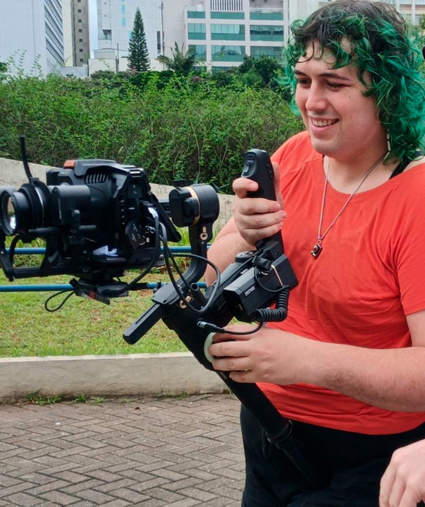
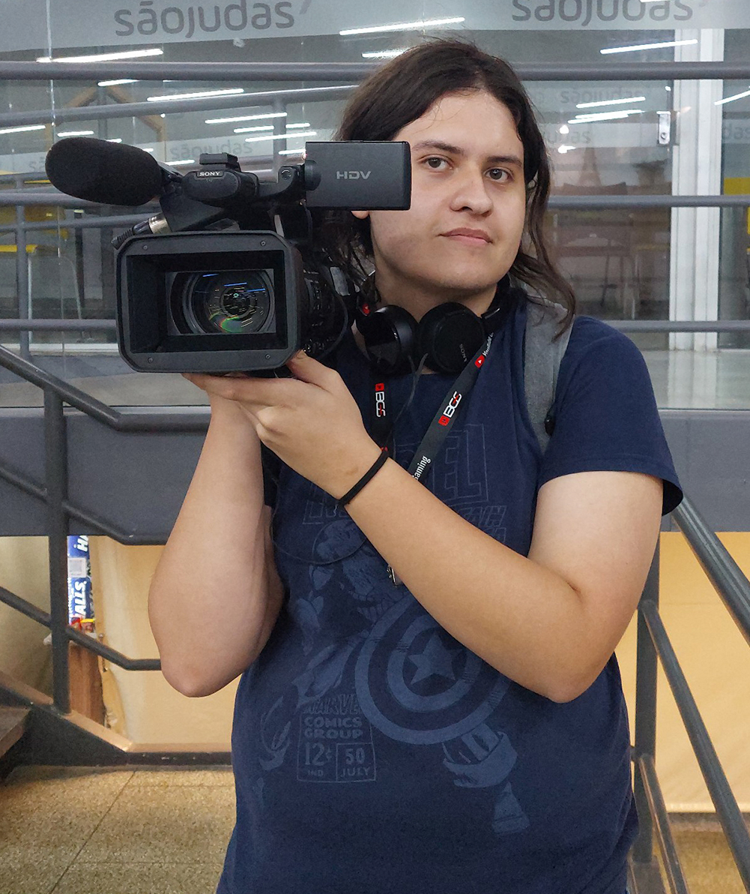
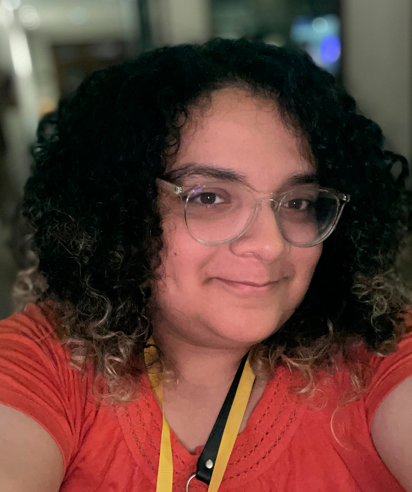

A Broadcatz nasce da união entre a Pondero Produções, de Annie Migliorini, e a Bit Produções, de Nelci Gomes Junior. Com mais de 15 anos de experiência no audiovisual independente, já realizaram projetos para Accor Brasil, Fórum LGBTQI+, Brasil FurFest e diversos estúdios de podcast de São Paulo.
Hoje, a Broadcatz oferece soluções criativas para produções e transmissões audiovisuais.

Trans neurodiversa, formada em Rádio e TV, com experiência em eventos e logística. Atuou no Anime Sampa, primeiro evento de anime gratuito de São Paulo, e como produtora no Coletivo Pondero, participando de projetos para o Museu da Língua Portuguesa e do programa Vocacional. Também codirigiu o documentário "Gênero, Sexualidade e Rugby" e dirigiu cortes de lives para o Fórum de Empresas LGBTQIAP+ da Accor Brasil.

Mulher trans, neurodiversa, formada em Multimídia e fundadora da Broadcatz. Atua com produção e transmissão de eventos nos segmentos corporativo e de entretenimento, sendo atualmente responsável pela cobertura ao vivo do maior evento furry da América do Sul. Também é apaixonada por elétrica e telecomunicações.

Mulher trans e engenheira de software, atua como sócia e consultora de tecnologia da Broadcatz. Encantada pelo universo do audiovisual, pesquisa tecnologias que apoiam os projetos de transmissão ao vivo da produtora.